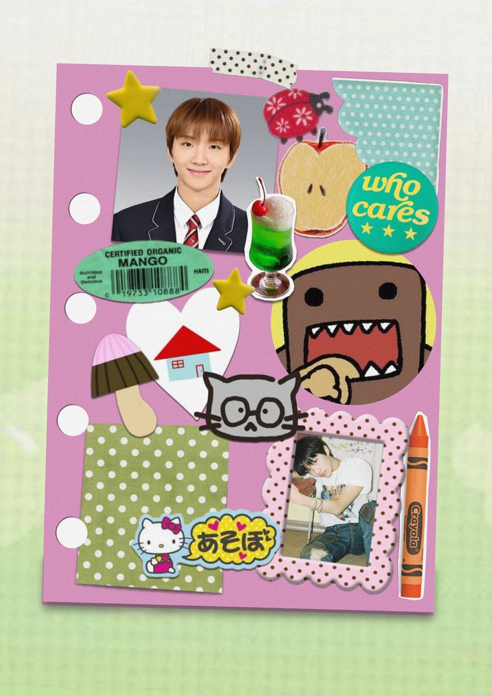
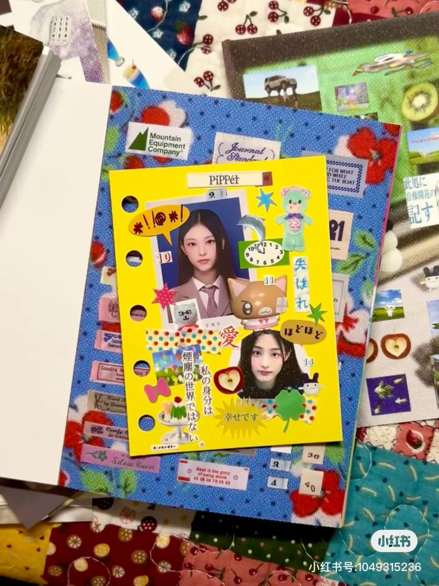
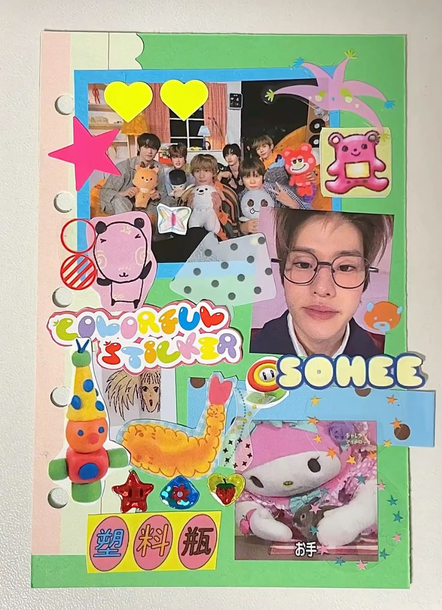
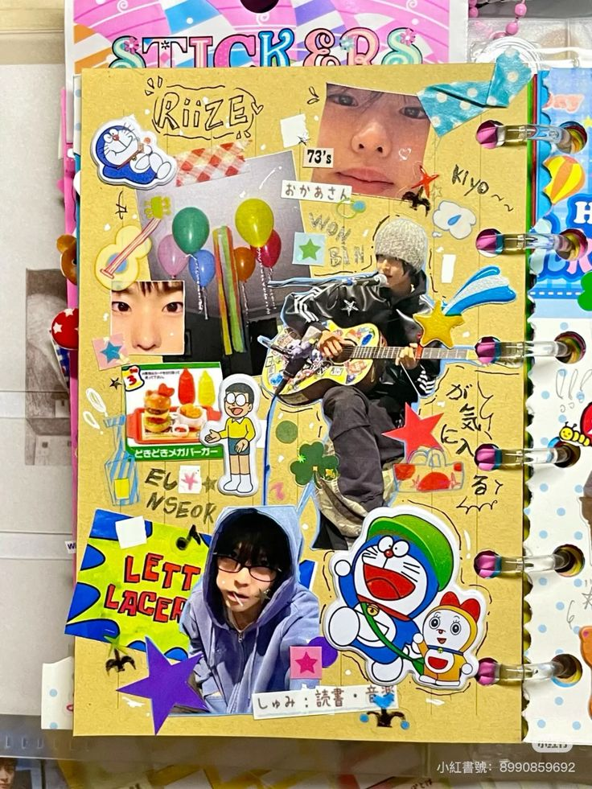
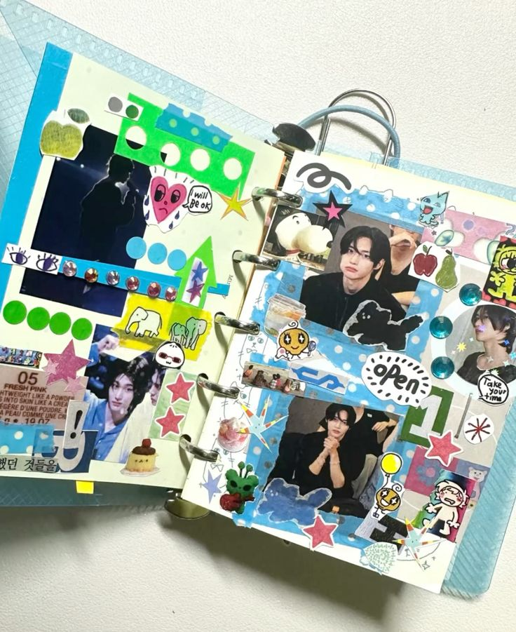
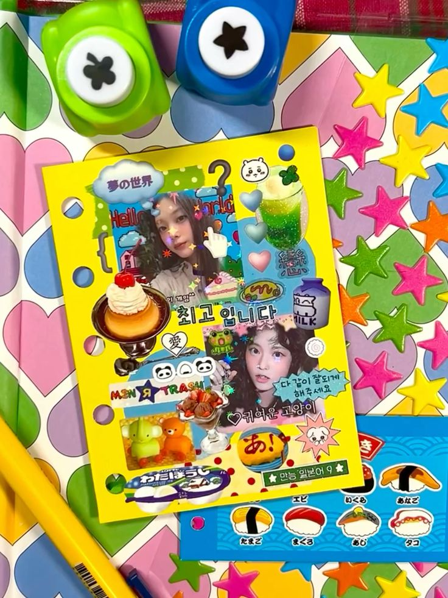
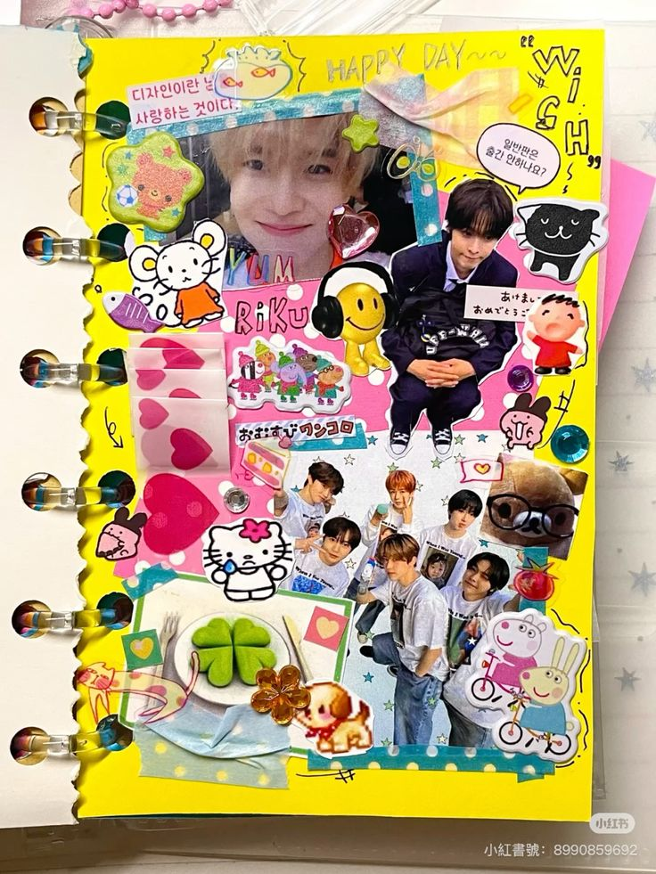
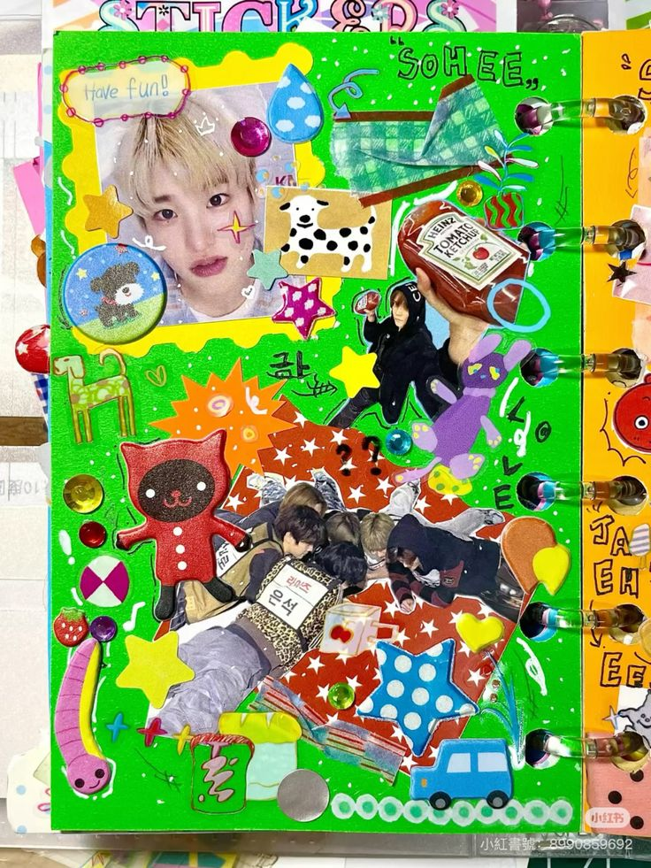

SEAN'S SCRAPBOOKING
Journal Tour
Quiet Expression
For me, scrapbooking is a form of escapism. It's a space where I don't have to find the right words to explain myself.
Building these spreads allows me to express my love for my interests—purely through visuals and textures.
- Sean








Every piece of work starts with an obsession. Whether it's a color palette or magazine cutouts, everything builds a story visually instead of verbally.
creative process // 2026
♫ ZEROBASEONE - FEEL THE POP